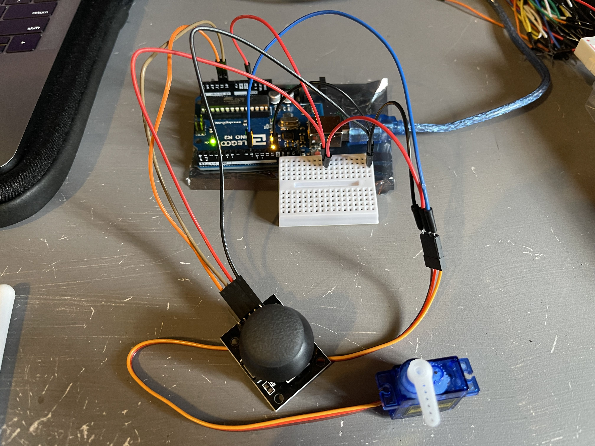

Michael Wentworth's Assignment 4!

Circuit for Assignment 4

Above circuit in action. The servo motor changes corresponding to the position of the joystick. The two components point in the same direction, but the servo motor has only 180 degrees of movement, so positive and negative y values on the joystick are treated as the same.
Schematic for the above circuit. The top schematic is for the joystick component and the bottom schematic is for the servo motor component.
#include <Servo.h> // uses Servo library
#include <math.h> // uses math library
int x = A0; // pin for x direction on joystick
int y = A1; // pin for y direction on joystick
double xval = 0; // current value/position of joystick, x-axis
double yval = 0; // current value/position of joystick, y-axis
double angle = 0.00; // current angle between xval and yval
const double pi = 3.1415926535897932384626433832795; // constant for pi
Servo myServo; // create a servo object
void setup() {
myServo.attach(9); // attaches the servo on pin 9 to the servo object
}
void loop() {
xval = analogRead(x); // gets position of joystick on x-axis (0-1023)
xval = map(xval, 0, 1023, -100.00, 100.00); // converts value to be from -100 to 100
yval = analogRead(y); // gets position of joystick on y-axis (0-1023)
yval = map(yval, 0, 1023, -100.00, 100.00); // converts value to be from -100 to 100
double angle = atan2(yval, xval); // calculates angle of the joystick
angle = (angle / pi) * 180; // converts angle from radians to degrees
// resting value for joystick is slightly off, so this "if" statement accounts
// for possible errors when joystick is not being touched
if (xval >= -3 && xval <= 3 && yval >= -3 && yval <= 3) { // if within error values
myServo.write(90); // default position is set to 90 degrees
} else { // if outside of error resting conditions
myServo.write(abs(angle)); // sets servo to absolute value of calculated angle
}
}
Code for the Arduino Circuit. Values of x and y position are constantly taken from the joystick component, and calibrated to be between -100 and 100. From there, the angular position of the joystick is calculated and sent to the servo motor, which is set to the same angle. The joystick has some error, especially when it is in its resting position, so a buffer of 6 in both the x and y direction is added to ensure that the servo is set to 90 degrees when the joystick is resting.